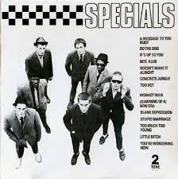

70's to 80's Music
Musical tastes offer a window into how you think
Do you like your jazz to be Norah Jones or Ornette Coleman, your classical music to be Bach or Stravinsky, or your rock to be Coldplay or Slayer? The answer could give an insight into the way you think, say researchers from the University of Cambridge. In a study published today in the journal PLOS ONE, a team of psychologists show that your thinking style – whether you are an ‘empathizer’ who likes to focus on and respond to the emotions of others, or a ‘systemizer’ who likes to analyse rules and patterns in the world—is a predictor of the type of music you like.
Although people’s music choices fluctuates over time, we’ve discovered a person’s empathy levels and thinking style predicts what kind of music they like In a study published today in the journal PLOS ONE, a team of psychologists show that your thinking style – whether you are an ‘empathizer’ who likes to focus on and respond to the emotions of others, or a ‘systemizer’ who likes to analyse rules and patterns in the world—is a predictor of the type of music you like. Music is a prominent feature of everyday life and nearly everywhere we go. It’s easy for us to know what types of music we like and don’t like. When shuffling songs on an iPod, it takes us only a few seconds to decide whether to listen or skip to the next track. However, little is known about what determines our taste in music.
Researchers over the past decade have argued that musical preferences reflect explicit characteristics such as age and personality. For example, people who are open to new experiences tend to prefer music from the blues, jazz, classical, and folk genres, and people who are extraverted and ‘agreeable’ tend to prefer music from the pop, soundtrack, religious, soul, funk, electronic, and dance genres.
Now a team of scientists, led by PhD student David Greenberg, has looked at how our ‘cognitive style’ influences our musical choices. This is measured by looking at whether an individual scores highly on ‘empathy’ (our ability to recognize and react to the thoughts and feelings of others) or on ‘systemizing’ (our interest in understanding the rules underpinning systems such as the weather, music, or car engines) – or whether we have a balance of both.
“Although people’s music choices fluctuates over time, we’ve discovered a person’s empathy levels and thinking style predicts what kind of music they like,” said David Greenberg from the Department of Psychology. “In fact, their cognitive style – whether they’re strong on empathy or strong on systems – can be a better predictor of what music they like than their personality.”
The researchers conducted multiple studies with over 4,000 participants, who were recruited mainly through the myPersonality Facebook app. The app asked Facebook users to take a selection of psychology-based questionnaires, the results of which they could place on their profiles for other users to see. At a later date, they were asked to listen to and rate 50 musical pieces. The researchers used library examples of musical stimuli from 26 genres and subgenres, to minimise the chances that participants would have any personal or cultural association with the piece of music.
People who scored high on empathy tended to prefer mellow music (from R and B, soft rock, and adult contemporary genres), unpretentious music (from country, folk, and singer/songwriter genres) and contemporary music (from electronica, Latin, acid jazz, and Euro pop). They disliked intense music, such as punk and heavy metal. In contrast, people who scored high on systemizing favoured intense music, but disliked mellow and unpretentious musical styles. The results proved consistent even within specified genres: empathizers preferred mellow, unpretentious jazz, while systemizers preferred intense, sophisticated (complex and avant-garde) jazz.
The researchers then looked more in-depth and found those who scored high on empathy preferred music that had low energy (gentle, reflective, sensual, and warm elements), or negative emotions (sad and depressing characteristics), or emotional depth (poetic, relaxing, and thoughtful features). Those who scored high on systemizing preferred music that had high energy (strong, tense, and thrilling elements), or positive emotions (animated and fun features), and which also featured a high degree of cerebral depth and complexity.
David Greenberg, a trained jazz saxophonist, says the research could have implications for the music industry. “A lot of money is put into algorithms to choose what music you may want to listen to, for example on Spotify and Apple Music. By knowing an individual’s thinking style, such services might in future be able to fine tune their music recommendations to an individual.” Dr Jason Rentfrow, the senior author on the study says: “This line of research highlights how music is a mirror of the self. Music is an expression of who we are emotionally, socially, and cognitively.”
Professor Simon Baron-Cohen, a member of the team, added; “This new study is a fascinating extension to the ‘empathizing-systemizing’ theory of psychological individual differences. It took a talented PhD student and musician to even think to pose this question. The research may help us understand those at the extremes, such as people with autism, who are strong systemizers.”
Hallelujah by Jeff Buckley
Come away with me by Norah Jones
All of me by Billie Holliday
Crazy little thing called love by Queen
Concerto in C by Antonio Vivaldi
Etude Opus 65 No 3 by Alexander Scriabin
God save the Queen by The Sex Pistols
Enter Sandman by Metallica